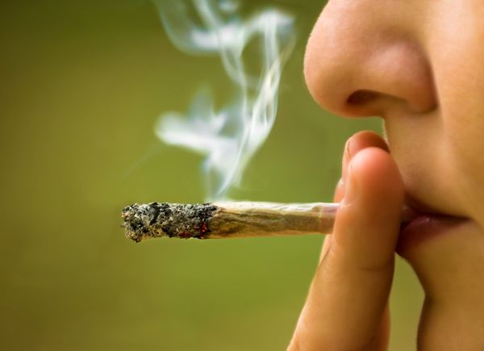

Durante décadas, el posible potencial adictivo del cannabis se ha
utilizado como argumento tanto por parte de los que defienden
elprohibicionismo (quienes en muchas ocasiones han exacerbado el
poder adictivo de esta sustancia), como por aquellos que defienden
la legalización de la planta, que en muchas ocasiones han negado que
el cannabis pueda producir algún tipo de dependencia o adicción. Ha
llegado el momento de abordar esta cuestión desde un punto de vista
más objetivo. El cannabis no es una sustancia inocua, por tanto, es
necesario que el usuario tenga información veraz y contrastada sobre
las consecuencias de su consumo.

¿La Marihuana crea tolerancia?
Publicado 01-03-2024
Sí. Por norma general, cuando el usuario tiene un
consumo habitual que se prolonga en el tiempo,
eventualmente termina por aumentar la dosis para poder conseguir el
mismo efecto. Incluso, en algunos casos en los que el consumo de
cannabis es abusivo, el usuario genera un nivel de tolerancia tan
alto que ya no es capaz de sentir la psicoactividad del cannabis.
¿La Marihuana crea dependencia?
Publicado 01-03-2024
Varios estudios apuntan a que un consumo abusivo y habitual que se
prolonga en el tiempo puede generar dependencia a la sustancia.
Aunque el nivel de dependencia es mucho más leve que el de otras
drogas psicoactivas, según el
manual diagnóstico y estadístico de los trastornos mentales DSM
IV-R, entre un 5% y un 10% de los consumidores de cannabis cumplen con
los criterios de dependencia.
Se ha demostrado que en algunos casos en los que el consumo es
abusivo y prolongado, el usuario puede sufrir síndrome de
abstinencia al interrumpir el consumo de marihuana. Los síntomas que
puede padecer un consumidor con dependencia del cannabis si deja de
consumir la sustancia son:
Ansiedad
Dificultad para dormir y trastornos del sueño
Pérdida de apetito
Irritabilidad
Factores de riesgo para el desarrollo de la dependencia al cannabis:
Inicio del consumo en una edad temprana. Varios estudios señalan
que las personas que comienzan a consumir cannabis de forma
regular durante la adolescencia, tienen más posibilidades de
desarrollar dependencia a esta sustancia y un patrón de consumo
adictivo.
Una elevada frecuencia de uso de la sustancia.
¿Cuáles son los síntomas de la dependencia a la marihuana?
Publicado 01-03-2024
El usuario genera tolerancia a la sustancia: necesidad de aumentar
la dosis progresivamente para conseguir el efecto deseado.
Padecimiento del síndrome de abstinencia cuando cesa el consumo.
Necesidad de recurrir a la sustancia para poder sentirse bien.